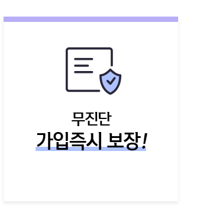
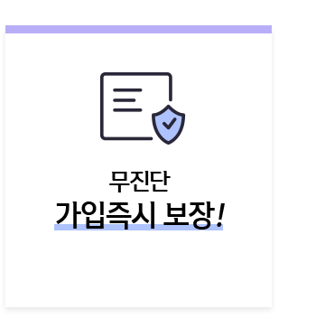

| 경과시간 | 남자 | 여자 | ||
|---|---|---|---|---|
| 납입보험료 | 해지 환급금 (환급률) |
납입보험료 | 해지 환급금 (환급률) |
|
| 3개월 | 500원 | 375원(75.0%) | 200원 | 150원(75.0%) |
| 6개월 | 500원 | 250원(50.0%) | 200원 | 100원(50.0%) |
| 9개월 | 500원 | 125원(25.0%) | 200원 | 50원(25.0%) |
| 1년 | 500원 | -(0%) | 200원 | -(0%) |
※ 상기 예시된 해지환급금은 이미 납입한 보험료보다 적거나 없을 수 있으며, 위의 예시된 해지환급금은 세전기준 입니다.